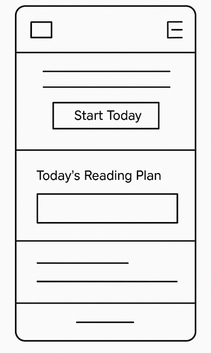
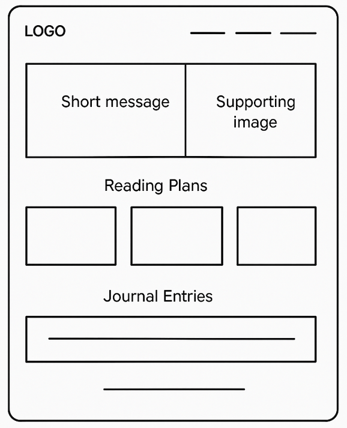

Primary Color
Hex: #234E70
Usage: Main headings, header background, navigation links, and important buttons.
A simple way to track and deepen your scripture study.
Daily Scripture Journey
I chose this name because it expresses the idea of a daily walk with the scriptures. The word “Journey” suggests progress over time, not perfection in a single day.
The purpose of the Daily Scripture Journey website is to help visitors plan, track, and reflect on their scripture study. The site will:
These questions represent what a typical visitor might want to know or do on the site:
The color schema for the Daily Scripture Journey website uses calm, spiritual, and readable colors. The main colors are:
Hex: #234E70
Usage: Main headings, header background, navigation links, and important buttons.
Hex: #F5A623
Usage: Call-to-action buttons, highlights, and small decorative elements.
Hex: #FDFCF7
Usage: Page background to provide a soft, readable canvas.
Hex: #333333
Usage: Main paragraph text and list items for good contrast and readability.
This site plan document already uses the primary, accent, background, and body text colors shown above for headings, background, and emphasis.
The website will use a small, simple type system:
This document already uses “Merriweather” for headings and “Open Sans” for the body text, matching the typography plan.
The following wireframes show the general layout of the Daily Scripture Journey home page. These are simple sketches to guide the structure of the content. Actual content and styling may change slightly during development.


The actual sketch images (home-mobile-wireframe.png and
home-desktop-wireframe.png) will be created and saved in the
project/images/ directory as part of the planning process.